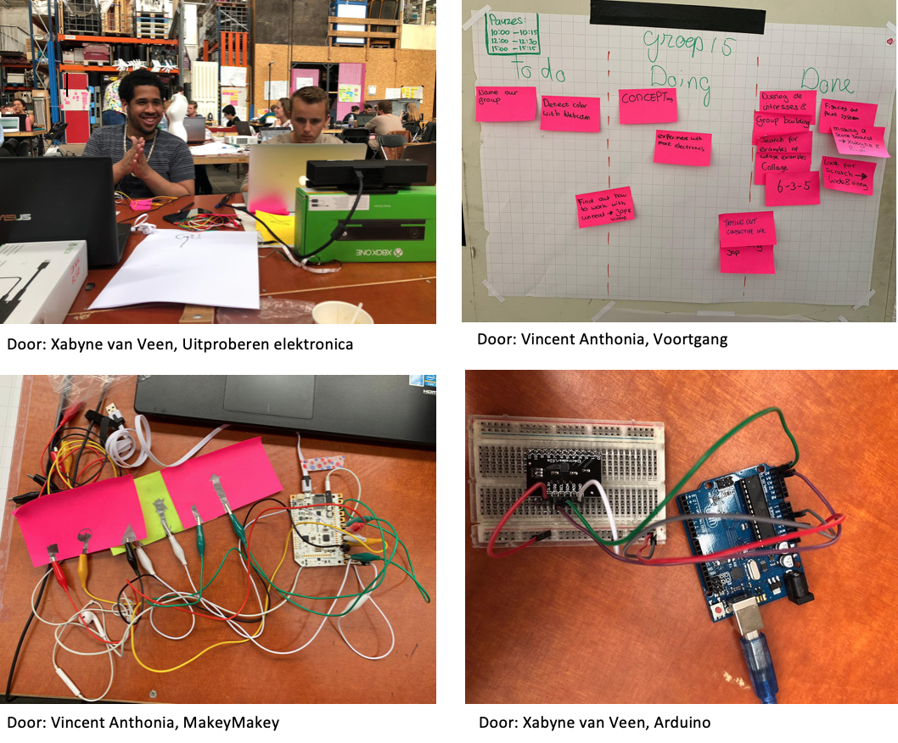
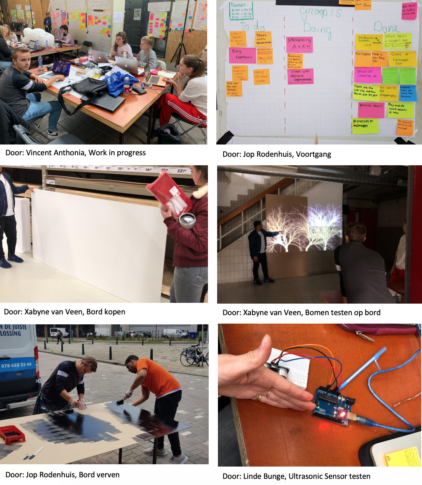

Deze dag was de kick-off van de HCI-weken. We kregen onze groepen te horen. We misten Alzbeta. Er was contact met haar gezocht en ze zal er vanaf dag 2 bij zijn. We begonnen deze dag met de group building. We hebben hierin onszelf voorgesteld en elkaars interesses besproken. Ik vond dit zelf erg prettig, omdat ik het fijn vind om mensen eerst te leren kennen voordat ik met ze samen ga werken. Na de group building gingen we voorbeelden opzoeken en deze als een collage/fotoreeks in Google Drive zetten. Ik heb vooral voorbeelden opgezocht die gebruik maakten van een projector. Ik heb deze keuze gemaakt, omdat playfull interfaces die gebruik maken van een projector mij het meest aanspraken. Vervolgens gingen we bespreken wat voor richting we op zouden willen gaan met onze interface. Ook hebben we een mindmap gemaakt en de 6-3-5-methode uitgevoerd. We wilden zoveel mogelijk ideeën bespreken om zo een creatiever concept te bedenken. Als laatste hebben we Leap, MakyMaky en Kinect uitgeprobeerd. Ik vond het een goed idee om deze elektronica uit te proberen. Zo leerde ik hoe je welke elektronica bij wat het beste kon gebruiken.
We zijn nog steeds bezig met het kiezen van een concept en met de group building. De group building is een voortdurend proces en daarom blijft deze in “doing” staan. Het concept is een grote keuze en we willen eerst gaan kijken naar wat we met de verschillende verzonnen concepten kunnen doen, hoe deze in zijn werk zullen gaan en wat voor technieken hiervoor nodig zijn voordat wij een keuze maken. Ik vind dit persoonlijk ook heel fijn. Ik wil namelijk niet roekeloos een concept kiezen. Je maakt toch iets groots, dus ik wil eerst kijken wat opties en ideeën zijn voor er echt iets wordt gekozen.
We moeten onze groep nog een naam geven. Ook moeten we nog gaan oefenen met het detecteren van kleur met een webcam. Verder willen we ook nog kijken hoe we posities kunnen detecteren.
Ik vond het een nuttige dag, omdat we enorm veel hebben gebrainstormd en omdat we meerdere concepten hebben bedacht. De volgende concepten hebben nu onze voorkeur:
1. Het verzamelen van vallende objecten. Dit is een single player object.
2. Een marathon met obstakels (zoals hordes). Hierbij moet je de obstakels vermijden. Dit wordt een multiplayer game. Je strijdt tegen elkaar.
3. Het maken van een piano. Hoe sneller je springt van de ene lichtgevende toets naar de andere, hoe sneller je kan raden om welke lyrics het gaat. Deze game is een multiplayer game, omdat de piano groot is en dan kan je samenwerken. Dit is ook fijn om mensen dichter bij elkaar te brengen.
4. Surfen waarbij je hoge golven en haaien moet ontwijken, omdat je anders van het bord af valt. Dit is een single player game.
5. Een basketbal game met verschillende kleuren ballen. Het is een multiplayer game. Iedere player heeft een eigen kleur bal. Wie de meeste ballen in de basket speelt, diegene wint.
6. Er wordt een bal afgevuurd naar jou en die moet jij in de cup weg slaan. Dit is een variant op Beerpong. Het is een single player game.
We gaan morgen dus oefenen met de verschillende technieken om zo te kijken met welk concept we aan de slag zouden willen gaan.
Mijn rol vandaag was vooral het meehelpen aan informatie opzoeken over voorbeelden en technieken en het bedenken van ideeën voor concepten. Ook heb ik vooral met Leap en MakyMaky geëxperimenteerd. Verder heb ik foto’s gemaakt voor in mijn verslag. Ik vond dat ik goed heb geparticipeerd vandaag.
We hebben vandaag nog geen tussenproducten gemaakt, omdat het vandaag om het brainstormen en het bekend raken met technieken ging. De vooruitgangen die ik wel heb gemaakt, is het bekendraken met bepaalde technieken en het bedenken van mogelijke concepten.
Door: Linde Bunge
Vandaag was een erg leerzame dag. We begonnen met een een stand-up meeting. We hebben Alzbeta bijgepraat met waar we mee bezig waren en wat zij ervan vond, omdat zij er de eerste dag niet wat. Verder bespraken we wat we deze dag wilden doen. We kwamen met elkaar overeen dat we nog meer met de verschillende technieken/electronics wilden oefenen. We kwamen tot de conclusie om te gaan kijken hoe we de leukste 4 concepten die we hadden bedacht, uit konden werken. We wilden aan elk concept ongeveer 2 uur besteden. Ik had zelf gemengde gevoelens bij dit idee, omdat ik het een beetje zonde vond van de tijd om zolang aan 1 concept te zitten terwijl je er heel veel niet kiest. Aan de andere kant zou het wel voor duidelijkheid kunnen zorgen, omdat je dan dingen makkelijker uit kan sluiten of juist blij wordt van concepten.
Ik begon samen met Linde aan het concept met de vallende objecten. We zochten afbeeldingen op die we konden gebruiken. Vervolgens schoten Vincent en Alzbeta ons te hulp en zochten naast Linde en ik naar de technieken achter dit concept. Linde en ik hebben achterhaald hoe je de code voor het scoreboard van deze game kan maken. Ik vond dit persoonlijk een gemakkelijke speurtocht, omdat er al veel bronnen beschikbaar waren. We merkten dat we tijdens deze speurtocht erachter kwamen dat we dit concept eigenlijk helemaal niet zo leuk vonden op dit moment. Om deze reden hebben we bepaalde to do’s even op “hold” gezet. We kwamen door onder andere Danicia tot een idee van een interactieve muur. We waren hier enthousiast over en daarom besloten we het werk waar we mee bezig waren naast ons neer te leggen en hiermee aan de slag te gaan en te experimenteren. Ik vond het idee van een interactieve muur enorm gaaf, omdat het iets mysterieus heeft en dit is wat mijn interesse enorm trekt. Dit kwam ookal uit de opdrachten die ik voor de lab weken had gemaakt. Jop bleef wel experimenteren met Kinect en is hiermee ver gekomen. We hebben voor de interactieve muur eerst met een touchbar (Bare Conjuctive) gewerkt. Ik heb me verdiept in hoe de muur werkt en ik heb tutorials gekeken en uitleg hierover gelezen. Ik heb dus geleerd hoe zo een muur in zijn werk gaat. Vincent heeft vooral geëxperimenteerd met geluid. Vervolgens hebben we Arduino en Processing erbij gepakt. Ik heb veel voorbeelden bekeken en ben met de code van Arduino en Processing aan de slag gegaan. Verder heb ik gezocht naar voorbeeld codes voor het veranderen van kleuren voor de projectie. Ook heb ik veel met docenten overlegd wat handig is voor ons om te doen en ik heb hen uitleg gevraagd zodat we verder konden. We lopen wel vast met dit stukje code waarin we dus willen bereiken dat als je op een stukje van die conjunctive verf drukt, dat de kleur dan verandert (in je geprojecteerde beeld).
Verder hebben we een gastspreker gehad. Hij heette Vincent en hij werkte voor Next Empire. Hij heeft ons veel projecten laten zien.
Ik vind dat mijn bijdrage vandaag goed was. Ik ben erachter gekomen hoe we een scorebord kunnen maken. Ook heb ik me goed verdiept in de Bare Conductive in samenhang met de interactieve muur, de code van Arduino en Processing.
De vooruitgangen die we hebben geboekt zijn dat we bekend zijn geraakt met de conjunctive verf. En dat we nog een richting hebben waar we naartoe kunnen gaan, namelijk de conjunctive wall. De andere vooruitgang die we hebben geboekt, is dat we weten hoe de verf werkt met geluid. Ik weet ook hoe een interactieve muur werkt. Verder zijn we verder met Kinect gekomen en hebben we daar een groot deel van de code voor.
Door: Linde Bunge
Deze ochtend begon ik met mijn groep aan een stand-up meeting. Hierin bespraken we wat we vandaag wilden gaan doen. Ik heb aangegeven wat ik belangrijk vond. Ik zei dat we vandaag een concept moesten bedenken en ik heb de taak op me genomen om aan de slag te gaan met het vraagstuk hoe we kleur kunnen veranderen op een interactieve muur door middel van touch. Vervolgens woonde ik een gastlecture over robots bij. Hierin werden verschillende robots genoemd en de keerzijde van deze robots. Ik vond dit leerzaam, omdat het echte producten leken, maar er toch nog zoveel keerzijdes en verbeterpunten aan zitten.
Na de lecture ben ik aan de slag gegaan met mijn taak. Sommigen gingen met Unreal aan de slag en sommigen samen met mij aan de interactieve muur. Ik gaf aan dat we misschien beter niet met Unreal konden werken, omdat we dit allemaal moeilijk vonden. Ik merk dat ik zelf echt niet graag met Unreal werk en dat ik daar dan zeker tegenaan zou lopen. De interactieve muur kan zoveel verschillende interacties hebben, dat dat heel playfull is. Om deze reden stelde ik voor om nu een conceptkeuze te maken. Ik vroeg naar de mening van anderen. Ook zij vertelden dat ze Unreal enorm moeilijk vinden. We begonnen met stemmen voor een concept. Er is gestemd op de interactieve muur en daarom zijn we ons met zijn allen zijn gaan focussen op de interactieve muur. Ook vonden we de interactieve muur leuker. We begonnen met brainstormen over een concept voor de muur. We kwamen tot de conclusie dat wij het thema circus erg leuk vonden. De reden hiervoor is, is dat het enorm veelzijdig is en dat je er veel mee kan doen. We hebben opgeschreven wat we willen dat de muur kan en wat voor illustraties er nodig zijn. Ik heb meerdere objecten hiervoor bedacht. Linde en ik zijn begonnen met illustraties maken. Jop kwam later bijspringen. Ik heb deze illustraties in Illustrator gemaakt en ik vond dit leuk om te doen. Ik vond dat we zelf illustraties moesten maken, omdat het dan echt onze eigen muur is dus ik vind het leuker om alles zelf te maken en we willen daarnaast geen plagiaat plegen. Vincent en Alzbeta zijn aan de slag gegaan met de madmapper en de projectie. Er is uitgevogeld hoe we geprojecteerde elementen klikbaar kunnen maken. Vanuit hier is er doorgedacht. Er is bedacht dat we een video kunnen maken om dingen van kleur te laten veranderen. Dit kan gebeuren wanneer er op de knop gedrukt wordt. We zetten in een filmprogramma de zwart-wit afbeeldingen neer. Deze afbeeldingen worden dan steeds een beetje ingekleurd en dan worden deze afbeeldingen achter elkaar neergezet. Zo lijkt het een bewegend/veranderend beeld, maar het zijn eigenlijk afbeeldingen achter elkaar geplakt als een video.
Wat ik op dit moment voor me zie is een grote muurervaring. Ik zou graag willen werken met lichten, kleur veranderende beelden, geluiden en beweging. Het leukst lijkt mij om ook met 3D objecten te werken en deze te programmeren.
Vandaag heb ik me dus heel erg beziggehouden met het bedenken van ideeën voor het circus. Met het zoeken naar code en technieken om deze doelen te laten slagen en met het maken van illustraties. Ook heb ik gepraat met docenten om uitleg te vragen. Ik heb ook gezorgd dat er een bestelling voor morgen is geplaatst, zodat we zelf goed aan de slag kunnen. Ik heb naar mijn mening een goede bijdrage aan mijn team geleverd, omdat ik veel voorbeelden ben gaan zoeken en dingen heb verduidelijkt wanneer zij dat niet begrepen. Ook heb ik veel gedaan, zoals ik hierboven al had beschreven. Waar ik wel tegenaan liep, is dat ik het enorm moeilijk vond om de code te vinden het veranderen van kleur. Nu is er een oplossing bedacht en daardoor zie ik meer het licht.
Er zijn dus verschillende vooruitgangen geboekt. Het concept is gekozen, er is achterhaald hoe we geprojecteerde items interactief kunnen maken. Ik heb geleerd hoe dit mogelijk is. Ook heb ik geleerd wat voor technieken er nog meer gebruikt kunnen worden om het bedachte concept tot een succes te maken.
Door: Alzbeta Selepova
Vandaag was er weer met een stand-up meeting. We bespraken wat we wilden doen vandaag. Ik gaf mijn mening over wat ik belangrijk vond dat gedaan moest worden. Mijn mening was dat we veel moesten experimenteren met technieken en dat we research moesten doen naar hoe we deze technieken toe konden passen. Vervolgens was er een gastlecture van Teun Verkerk van TU Delft. Hij vertelde over robots die hij had gemaakt.
Na deze lecture gingen we aan de slag. Ik ging met Linde met MakeyMakey experimenteren. We wilden een piano maken. Echter kwam ik tot de conclusie dat er maar weinig ingangen waren bij MakeyMackey om een piano te maken. Ik kon maar 2 ingangen vinden en voor een piano is dat veel te weinig. Hierdoor begon ik me af te vragen hoe we dan een piano moesten maken. Ik kwam tot de conclusie dat we dit met onze Arduino kit kunnen doen.
Verder kwam er ter sprake dat ons huidig concept niet echt een doel had. We moesten onszelf afvragen wat we voor ervaring wilden creëren met het bedachte circusthema. Ik kon hier zelf niet echt een goed antwoord voor verzinnen. Om deze reden ging ik mezelf afvragen wat ik belangrijk vond aan zo een muur en wat mij zou aanspreken. Ik kwam tot de conclusie dat ik het gaaf vond als ik een verschil zie in het begin en het einde van mijn bezoek. Hierdoor ging ik nadenken over hoe we dit konden bereiken. Ik kwam op het idee om een wereld te creëren waar (bijna) niets is. Vervolgens groeit deze wereld tot een wereld met veel leven en kleur. Er komen steeds meer bomen, dieren en planten bij. De wereld wordt steeds voller. Het zou ook leuk zijn als er een brug wordt gemaakt die uitklapt als mensen dichtbij komen. Op deze manier heeft de gebruiker van de muur het idee dat hij of zij die wereld tot leven heeft gebracht. Dit heeft dan ook iets mysterieus, omdat je begint met niets en eindigt met een enorme wereld. Mijn groep vond dit een leuk idee. Ik heb een stappenplan gemaakt en we hebben taken verdeeld. Ik ben met Linde aan de slag gegaan aan het design. Hiervoor gingen we eerst objecten bedenken die we op onze muur zouden willen. Vervolgens hebben we zelf schetsen gemaakt en deze gecombineerd. Daarna maakten we onze uiteindelijke schets. Vervolgens gingen we bedenken wat interactief moest worden en op wat voor manier. De anderen gingen uitzoeken of Processing en Scratch samen konden werken en hoe deze programma’s werkten. Ook werd er uitgezocht hoe er een boom kon groeien door middel van Processing. Vervolgens hebben we met zijn allen een “promise” bedacht. Ook is ons touchboard binnengekomen en deze is geïnstalleerd. Er is geëxperimenteerd met het afspelen van een animatie.
Ook werden er vragen aan mij gesteld door mijn groepsgenoten, ik heb deze vragen beantwoord waardoor ik ze verder op weg heb geholpen. Ook hebben we met verschillende docenten gepraat om ons concept uit te leggen.
Als laatste ben ik met Linde met Arduino aan de slag gegaan. We wilden uitproberen om een knop werkend te maken. Ons uiteindelijke doel is om deze code met Processing te verbinden waardoor de bomen kunnen groeien als de button wordt ingedrukt. Linde zette de Arduino in elkaar terwijl ik keek of het mij lukte om de code te maken. Helaas kreeg ik de code niet aan de praat. Ik heb meerdere dingen veranderd in de code, maar helaas lukte het mij niet. Om die reden heb ik Dennis om hulp gevraagd. Hij heeft ernaar gekeken, maar het lukte hem niet om me te helpen. Ik heb een tutorial opgezocht en hiermee wil ik morgen aan de slag gaan.
Ik ben tevreden over mijn bezigheden van vandaag. Ik heb veel ideeën bedacht en hulp geboden aan groepsgenoten, advies gevraagd aan docenten en ik heb veel uitgevoerd en geprobeerd zoals ik hierboven al had beschreven. Waar ik dus wel tegenaan was gelopen was het feit dat we vastliepen met het concept. Gelukkig heb ik hiervoor een idee weten te bedenken waardoor we met een andere kijk door konden.
De vooruitgangen die we vandaag hebben geboekt is het maken van een nieuw concept. Althans de interactieve muur is nog steeds ons idee alleen hebben we de omgeving veranderd. Verder hebben we de muur gevisualiseerd in een prototype en technieken erachter onderzocht. Ik heb dus geleerd wat voor technieken er hiervoor gebruikt kunnen worden. Ook hebben we een voorbeeld code gevonden om een boom te laten groeien. We hebben bedacht welke technieken we waarschijnlijk willen gaan gebruiken (proximity, touchbar, arduino, processing, arcadeknop). Er is dus veel duidelijkheid ontstaan en ik heb dus veel geleerd.
Door: Jop Rodenhuis
Vandaag werd er weer met een stand-up meeting begonnen. We bespraken weer de taken en ik gaf aan wat ik belangrijk vond. Vervolgens was er een gastlecture van Marcello Gómez Maureira over Playfulll Interfaces. Hij werkt in Leiden en studeert ook nog. Er is vandaag ook een stappenplan gemaakt.
Ik ben begonnen met de code van Arduino. Linde zette ondertussen de bijbehorende Arduino in elkaar. De Arduino op het voorbeeld was anders dan onze en daarom vroegen we een student om hulp. De code van Arduino ging redelijk vlot dus daar was ik tevreden mee. Deze deed het ook goed met de button. Het lichtje ging branden als je de knop indrukte. Dit was heel fijn. Vervolgens probeerde ik de code van Arduino aan Processing te koppelen. In Processing had ik de code van de groeiende bomen geplaatst. Helaas kreeg ik enorm veel foutmeldingen in mijn processing code. Hier raakte ik van in de war waardoor ik vast liep. Ik snapte niet meer wat er fout was en waar ik moest zoeken. Ik heb hulp gevraagd aan docenten. Zij vonden het ook moeilijk, maar hebben mij wel op weg geholpen. Ik merkte dat ik Processing enorm moeilijk vond. Waar we uiteindelijk achter kwamen, was dat we de Arduino beter op een andere manier konden bouwen. Ook heb ik wat veranderingen in Arduino code gedaan (ook omdat we nu een de Arduino zo hadden gebouwd dat deze geen LED-light meer had). Vervolgens moest ik nog veranderingen aanbrengen in Processing. Omdat ik zo lang aan deze code had gezeten, zag ik niet meer wat er fout was en waar ik moest beginnen. Dit maakte me een beetje ongerust, omdat ik bang was dat het niet zou lukken. Ik heb dit codeerwerk dan ook even naast me neergelegd, omdat ik de fouten toch niet meer zag. Ik heb wel geleerd dat ik bij Processing goed moet kijken of deze echt met de Arduino is geconnect en of de Arduino echt een bericht naar Processing stuurt.
Vervolgens hadden we een groepsmeeting. Hierin bespraken we dat we het concept beter iets concreter konden maken. We besloten om een nachtervaring met groeiende bomen en lights (als sterren) te maken. We willen een donkere ruimte creëren door middel van zwarte gordijnen aan de zijkanten van de ruimte. Er wordt op 1 muur geprojecteerd. Je kan aan de onderkant op de bladeren drukken en dan gaan de bomen groeien. Ook kan je op bepaalde plekken klikken en dan zal er een bepaald geluidje afgespeeld worden. De ledverlichting reageert op weinig licht. Als er weinig licht is, zullen deze LEDs aan gaan, als er veel licht is zullen deze uitgaan. Als we tijd over hebben kunnen we ons concept altijd uitbreiden en 3D maken.
Ik heb zelf gemixte gevoelens over vandaag. Voor mij voelt het alsof ik niet ver ben gekomen, terwijl ik zo enorm veel met de code ben bezig geweest. Ik heb enorm mijn best gedaan om het werkend te krijgen en het voelt als een enorme telleurstelling dat het nog steeds niet is gelukt. Ik kijk wel met een frissere blik naar dinsdag, omdat we op papier de besluiten en de to do’s hebben geschreven. Ook omdat het een concreter concept is, maakt dit het bouwen in mijn ogen makkelijker.
De vooruitgangen die we vandaag hebben geboekt, zijn dat we iets verder zijn gekomen met de code voor de groeiende bomen. Verder hebben we ons concept concreter gemaakt. Ook heeft Jop de proximity aan de praat gekregen en deze kunnen we eventueel gebruiken voor de geluiden. Dit kan gezien worden als een tussenproduct.
Door: Jop Rodenhuis
Vandaag werd er weer met een stand-up meeting begonnen. Ik was erg blij dat we met dit concept verder konden, omdat ik echt geloof in dit concept. Bij de vorige concepten had ik toch nog twijfels over bepaalde elementen (vooral de vele verschillende soorten inputs en interacties). We bespraken in de stand-up meeting wat we vandaag wilden gaan doen. Iedereen heeft zijn eigen inbreng gedaan.
Ik ben de requirements lijst gaan schrijven. In overleg met de groep is er eerst een lijst gemaakt van wat wij nodig hebben en vervolgens een lijst van wat we aan de docenten moeten vragen. Ik vond dat we eigenlijk vrij weinig van de docenten nodig hadden en dit stelde me gerust. Ik heb liever dat ik zelf veel regel, want dan weet ik zeker dat het goed komt en dan ben ik minder afhankelijk.
Vervolgens gingen we met zijn allen het prototype testen. We bespraken of we een zwarte of witte achtergrond wilden en hoe we het wilden doen met de verf. Mijn menig was dat we een zwarte achtergrond moeten gebruiken, omdat de bomen wit zijn. Als het donker is zie je de bomen ook op een witte achtergrond, maar op een zwarte achtergrond zal naar mijn mening het contrast groter zijn en het nachteffect dus ook. We besloten uiteindelijk ook om een zwarte achtergrond te gebruiken. We bespraken dat we voor de omlijning van de bladeren en de andere visuals witte verf nodig hadden en dat we in het midden daarvan zwarte verf doen. Zo worden de visuals interactief. Ik kwam ook met het idee om de bladeren compleet in te kleuren met de zwarte verf, zodat het gehele blad “clickable” wordt, maar er werd toch door de groep besloten dat we het bij de omlijning houden.
Hierna ging ik met Linde en Vinny naar de Gamma om het bord voor de muur, de verf en de kwasten te halen. We hadden 1 groot bord gekocht. Bij terugkomst gingen we deze meten en we merkten dat we er nog 1 nodig hadden. Daarom gingen Vinny en Jop er nog 1 halen.
Vervolgens ging ik met Linde aan de slag met de Arduino. We merkten dat we waarschijnlijk een probleem hadden met de LEDs als we deze laten reageren op licht. We wilden dat de LEDs aan gingen als er weinig licht was en uit gingen als er veel licht was. Aangezien de projector op de muur schijnt, zal er altijd licht op schijnen. We hebben de code geprobeerd, maar het werkte niet mee. We gingen nadenken over een andere oplossing. Ik kwam met het idee om te LEDs aan te laten gaan door middel van proximity. Mijn groepsgenoten vonden dit een goed idee. Mij lijkt dit ook heel gaaf, omdat de muur zal reageren op hoe dichtbij je loopt. Het is dan iets “magisch” en “mysterieus” omdat je niets aanklikt. Dit vind ik persoonlijk altijd een hele gave ervaring en daarom bedacht ik om dit op te nemen in ons concept. Daarnaast wilde ik niet weer iets met touch, omdat dat bij de andere interacties al het geval is. Voor de proximity hebben we een Ultrasonic Sensor HC-SR04 gebruikt. Linde en ik zijn opzoek gegaan naar tutorials. We hebben eerst verschillende Arduino’s proberen te maken met deze meter, maar die lukten ons niet. Vervolgens stuitte we beiden op dezelfde tutorial.
Ik heb de code opgezocht terwijl Linde de Arduino in elkaar zette. Toen de Arduino in elkaar was gezet, heb ik deze aangesloten op mijn computer en de code geupload. De code werkte. Vervolgens ben ik in de code gaan kijken hoe ik de afstand aan kan passen. Ook dit lukte me en ik was erg trots en blij dat dit gelukt was. Weer een stap vooruit!
Vinny en Jop hebben samen de muur geverft en Alzbeta is gaan kijken naar rechtenvrije geluiden voor de muur. Ook werken de bomen nu onafhankelijk van elkaar.
Ik vond mijn deelname aan de groep vandaag goed. Ik heb mijn inbreng gebracht en ik merkte dat ik vrolijker werd, omdat we de goede richting op gingen. Ik heb spullen voor de muur gekocht en de Arduino aan de praat weten te krijgen met de proximity sensor.
De vooruitgangen die zijn geboekt betreffen de muur die nu zwart is, de Arduino met de proximity sensor en de LEDs die werkt en de bomen die nu af zijn. Het tussenresultaat dat we hebben is dat we ons concept op de muur hebben geprojecteerd en de borden ervoor hebben geplaatst. Dit is ons geteste prototype.
Door: Xabyne van Veen
Vandaag begonnen we weer met een stand-up meeting. Ik benoemde dat we de requirements lijst moesten gaan maken. Daar gingen we dan ook gelijk mee aan de slag na de stand-up meeting. Ik heb de lijst opgesteld en de plattegrond gemaakt voor de ruimte die we nodig hebben. Om deze ruimte goed te meten, hebben we ook gemeten hoeveel ruimte de projector nodig heeft. Dit gingen we dan ook doen. Dit ging allemaal heel soepel. We projecteerden de bomen op de platen die waren geschilderd. We merkten dat de platen wel wat vlekkerig waren en dat dat minder mooi uitkwam met de projector. Ik gaf aan dat ik dit wel jammer vond, omdat dit de achtergrond van ons concept is en dus een groot oppervlak is. We kwamen met zijn allen tot dezelfde mening en dat was om de borden morgen met nog een laag te verven als we genoeg tijd hadden. Vervolgens gingen we meten waar de bomen begonnen met groeien. Dit moesten we weten in verband met het schilderen van het begin van de bomen. Ik heb nagevraagd of de bomen allemaal met dezelfde breedte begonnen. En dit was gelukkig zo. Dit vond ik ook soepel gaan en daar was ik erg tevreden over. Ook hebben we gekeken waar de sterrenhemel begon. Vervolgens moesten we een oplossing verzinnen over hoe we de platen aan de muur gingen bevestigen. Meerdere van ons, onder andere ik, hadden hetzelfde idee en dat was dat we de platen aan de trap konden ophangen door middel van draad. De bedoeling was om dan gaatjes in de bovenkant van het bord te maken en deze platen dan strak omhoog te trekken. Dit was naar mijn idee een slimme oplossing.
Na het meten, heb ik de Arduino nog een keer getest met Linde. Deze deed het gelukkig nog. Daarna heb ik mijn voorkeur voor de geluiden voor de muur uitgesproken. Ik vond de wolf, de uil, de voetstappen de groeiende bomen toepasselijk bij ons concept. Verder vond ik de geluiden niet zo goed passen of te dubbel. Alzbeta besloot om die reden nog even verder te kijken naar andere geluiden.
Vervolgens ging ik met Linde samen de gaatjes voor de sterrenhemel boren. Eerst gingen we opzoek naar een boor en we hebben gekeken of de gaatjes die die boor zou boren groot genoeg zouden zijn voor de LEDjes die we wilden gebruiken. Dit was het geval dus we besloten te boren. Ik was van mening dat we de gaatjes het beste random konden boren in plaats van in een rechte lijn, omdat de sterren in een sterrenhemel ook random staan. Gelukkig deelde Linde deze mening.
Na het boren van de gaatjes bedachten we wat we nog meer nodig hadden voor de LEDs. We kwamen erachter dat we wel een bestelling moesten plaatsen, omdat we niet genoeg LEDjes hadden. Groepsleden waren 3 winkels af geweest, maar zij hebben niet de goede LEDjes kunnen vinden of deze waren enorm duur. Ik heb onderzoek gedaan naar wat we nodig hadden. Mijn idee was om gewoon een snoer van 5 meter te kopen met 300 LEDjes. We hadden maar 30 LEDjes nodig maar wel een snoer van 5 meter. Op deze manier konden we alleen de LEDjes die we wilden gebruiken door de gaatjes van de muur steken en verder hoefden we niet veel te solderen. Ik vond dit van mezelf een goede, slimme en efficiënte oplossing. Omdat de LEDjes op dit snoer 12 volt aankonden, hadden we ook nog een Volt divider nodig. Deze heb ik dan ook besteld met een batterij erbij.
Ik ben tevreden over mijn inzet van vandaag, omdat ik mijn mening goed heb uitgesproken en voor de bestelling heb gezorgd. Verder heb ik goed meegewerkt. Ik vond wel dat we voor vandaag redelijk weinig hadden gedaan en daar baalde ik wel van. Het ging allemaal heel langzaam en ik had het gevoel dat we vastliepen. Ik had het gevoel dat dat kwam doordat iedereen enorm moe was. Ik hoop enorm dat we morgen de draad op kunnen pakken en er vol voor kunnen gaan.
De vooruitgangen die we vandaag hebben geboekt zijn dat we de projectie op de muren hebben afgemeten, ik heb samen met Linde de gaatjes voor de sterrenhemel LEDjes geboord en we hebben de geluiden gekozen. Verder zijn we eruit hoe we de sterrenhemel exact willen vormgeven en hoe dit gemaakt moet worden.
Door: Xabyne van Veen
De dag voor de grote expo. Alles moest zo goed als af zijn. We zijn begonnen met het afmeten van de projector. Dit hadden we gisteren al gedaan, maar we kregen te horen dat we de bank die we gister voor de projector gebruikten niet meer tot onze beschikking hadden. We moesten dus wat anders verzinnen. De tafel was te hoog en de stoel was te laag. Ik bedacht om gebruik te maken van dozen. Deze kunnen op verschillende manieren neergezet worden en zo kunnen we zelf bepalen hoe hoog deze moet. Dit werkte gelukkig. Vervolgens heb ik de vogels geprojecteerd op de muur zodat deze overgeschilderd konden worden. Daarna heb ik deze met Linde ingekleurd. Vervolgens hebben we dit ook bij de wolf gedaan. Linde en ik besloten om de figuren met meerdere lagen over te schilderen, zodat deze echt wit werden. Verder zijn de ramen alvast afgeplakt met vuilniszakken.
Helaas kwamen we er rond elf uur achter dat we vandaag 1 grote telleurstelling moesten verwerken. Voor het eerst werd de bestelling die we de dag van tevoren hadden geplaatst niet optijd bezorgd. De bezorgdatum volgens planning zou tussen 12.15 en 14.45 op vrijdagmiddag zijn. Hierop konden we niet wachten. We moesten een oplossing verzinnen. Ik voelde mezelf verantwoordelijk voor dit probleem, omdat ik samen met Linde aan deze LEDjes was begonnen. Danicia vertelde ons dat we het met losse Arduino LEDjes konden maken en dat dat ook goed mogelijk was. We moesten dan uitzoeken hoe we meerdere LEDjes konden verbinden met de Ultrasonic Sensor. Toen ik dit hoorde, voelde ik me enorm gestresst en wist ik niet wat ik moest denken. Dit kwam puur, omdat ik zelf niet goed met Arduino kan werken. Ik kan wel op weg met de code, maar ik vind het enorm moeilijk om zelf een Arduino in elkaar te zetten, omdat we dit nooit echt geleerd hebben. We kregen in de les allemaal voorbeelden die we moesten nabouwen en we hoefden alleen de code aan te passen. Daarom weet ik zelf niet goed hoe ik een Arduino in elkaar moet zetten. Ik besloot de stress en de angst naast me neer te leggen en gewoon maar te beginnen. Er was tevens tijdsnood. Ik ben tutorials gaan kijken en heb verschillende afbeeldingen bekeken. Jop kwam me helpen en hij is ook opzoek gegaan. Vervolgens heb ik meerdere LEDjes weten te verbinden aan 1 Arduino en Jop wist de Ultrasonic Sensor aan de praat te krijgen. Deze twee heb ik vervolgens met elkaar verbonden. Na een aantal fouten en aanpassingen in de code werkte het steeds beter. Er kwam steeds meer verbetering in. Op een gegeven moment ging Jop de gaten voor de LEDs groter boren. We hebben nu namelijk grotere LEDs dan de anderen die we hadden besteld. Daarom moesten deze gaatjes groter worden gemaakt. Ik ben doorgegaan met het aanpassen van de code naar hoe wij hem willen zien. Het heeft even geduurd, maar met hulp en inzicht is het gelukt. Ik moet zeggen dat ik enorm trots was en hieruit heb geleerd dat ik niet te min over mezelf moet denken. Ik kan het als ik het echt wil. Vervolgens heb ik een ander bord gepakt om nog meer LEDs te verbinden met de Arduino. Ik merkte wel dat verschillende inputs van het Arduino Board anders reageerden op de code. Dit vond ik niet erg, omdat dit wat extra’s mee kon geven aan de muur. Verschillende sterren zouden dan anders reageren. Toen ik hierover nadacht, werd ik hier enthousiast van en liet ik het zo. Wel hebben Jop en ik ervoor gekozen om gebruik te maken van minder LEDs. We kozen hiervoor, omdat het anders enorm veel soldeertijd zou kosten en het zonder zoveel LEDs ook een mooie sterrenhemel zou worden. Als we tijd over hebben, kunnen we altijd nog meer LEDs toevoegen, was onze instelling. Zolang de basis maar werkt.
Hierna moest er gesoldeerd worden. Danicia heeft Jop en mij uitgelegd hoe wij dit moesten doen. Ik heb een tekening gemaakt over hoe het allemaal gesoldeerd moest worden. Vervolgens hebben we gekeken naar waar we wat moesten plaatsen op de muur. Ik heb de draden geknipt en Jop is verder gegaan met solderen. Ik heb 1 kleur draad gebruikt voor de Ground om het overzicht te behouden. Het overzicht houden is naar mijn mening enorm belangrijk, zo kan je goed zien wat je doet. De draden naar de pins hebben een andere kleur om aan te duiden dat het om verschillende pins gaat. We hebben het voor elkaar gekregen om alle LEDs aan de weerstandjes, de draden van de ground en de draden van de pins te solderen. Meer tijd hadden we helaas niet vandaag. We weten wel hoe we verder moeten dus morgen gaan we er vol tegenaan.
Alzbeta, Vincent en Linde zijn doorgegaan met de conductive inkt en de andere tekeningen op de muur. Zij zijn ver gekomen en hebben aan de achterkant van de muur ook al alle draden aan elkaar verbonden. Tot nu toe werkt het, dus hopelijk werkt dat morgen ook.
Ik ben enorm tevreden over mijn inzet vandaag. Ik heb de verantwoordelijkheid op me genomen om de LEDs te maken met de proximity sensor en Jop heeft mij geholpen. Samen is het ons gelukt om het aan de praat te krijgen. Verder heb ik ook nog voor een deel geholpen aan het verven van de muur. Ik ben dus best veelzijdig bezig geweest.
We hebben vandaag enorm veel werk verricht. Het touchboard is aan de muur bevestigd, de muur is geschilderd, ook met de conductive inkt. Verder heb ik de code voor de LEDjes gemaakt en de code voor de proximity sensor is gemaakt en al een deel van de LEDjes zijn gesoldeerd. Het tussenresultaat is dus dat het touchboard werkt en dat we alleen nog de lichtjes werken hoeven te maken.
Door: Xabyne van Veen
De allerlaatste dag. Ik was erg gespannen en een beetje gestresst of alles optijd af zou komen. We begonnen de dag met het bespreken van welke taken er uitgevoerd moesten worden. Ik zou met Jop verder gaan met de LEDjes. Vincent, Alzbeta en Linde zouden doorgaan met de conductive inkt interactiviteit. Jop soldeerden de laatste wires. Ik begon met het verbinden van de pinnen met het Arduino Board. Nadat alles gesoldeerd was, bevestigde ik alles aan het Arduino Board en begon ik met het testen van de LEDs. Tot mijn grote spijt deden alleen een paar lichtjes het. Ik begon te kijken waar dit aan lag. Ik was er met Danicia achter gekomen dat de LEDjes verkeerd waren gesoldeerd. De ground- en de pin-kant van het LEDje waren omgedraaid (de korte met de lange kant). Ik baalde hier enorm van, zeker omdat ik een tekening had gemaakt voor Jop met hoe alles gesoldeerd moest worden en het alsnog niet goed was gegaan. Teamgenoten zagen het niet meer werken. Ik was daar best geïrriteerd om, omdat ik begreep hoe het in elkaar zat en ik de dag ervoor zo hard mijn best had gedaan op de code en sommigen wilden het nu opgeven. Dit gaf mij een naar gevoel. Uiteindelijk gingen ze gelukkig wel met mij aan de slag. Ik bedacht verschillende oplossingen. Eerst dacht ik dat alle LEDjes die het niet deden, losgemaakt moesten worden en vervolgens omgedraaid moesten worden en weer aan elkaar gesoldeerd moesten worden. Daarna bedacht ik een veel slimmere oplossing. We koppelen alle wires los die aan de Ground zijn gesoldeerd. Testen welke de Ground is bij elke pin en solderen de goede wires van de Grounds aan elkaar. Dit zou veel minder werk kosten. Teamgenoten waren al begonnen aan het lossolderen van de LEDjes. Ik vertelde ze dat ze beter konden stoppen met de LEDjes los te solderen, omdat dat meer werk zou kosten dan nodig. Nadat we de efficiëntere oplossing hadden uitgevoerd, begon ik de LEDjes nog een keer te testen. Meer LEDjes deden het dan eerst maar nog niet alles. Één kant van de muur deed het, maar de andere kant nog niet. We besloten dat we de muur met de conductive inkt ook wel echt moesten testen en omhoog moesten zetten, omdat de eindtijd naderde. We besloten de ene helft al omhoog te hijsen en nog een keer naar de andere kant van de muur met de LEDjes te kijken.
Ik keek naar waar de fout zat wat betreft de LEDjes. We hebben nog wat wires omgedraaid en opnieuw gesoldeerd. Sommigen wires waren hierdoor te kort geworden. Die hebben we dan een andere plek gegeven of niet gebruikt als er geen mogelijkheid voor een andere plek was. Toen testen ik de LEDjes en tot mijn vreugde deden ze het. Ik was zo blij en zo trots. Ik heb het niet opgegeven ook al zat de stress me heel hoog. En het resultaat was gaaf! Deze kant van de muur hebben we daarna ook omhooggetild. Ik heb de wires aan de achterkant van het board vastgekoppeld aan het Arduino Board. Ik had het Arduino Board aan een powerbank gekoppeld, maar deze powerbank viel elke keer na een paar seconden uit. We moesten het Arduino Board dus met een andere bron verbinden. We pakten een verlengsnoer en dit werkte. De LEDjes bleven het doen.
Ook de wires van de conductive inkt werden aan elkaar vastgemaakt. Één boom deed het helaas niet, maar de rest wel. Deze boom is redelijk snel weer gefixt. Hierna deed de gehele muur het. We waren met zijn allen zo opgelucht. We waren klaar en het was allemaal gelukt!
Verder had ik ergens tussendoor nog alle bedradingen aan de achterkant van de muur steviger vastgetaped, omdat de tape die er nu op zat best snel losliet.
Ik vond vandaag een enorm heftige dag. Er was veel stress aanwezig. Ik was wel trots op mezelf dat ik de LEDjes echt wel zag werken ook al hadden we veel tegenslagen, omdat ik wist hoe ze verbonden moesten worden. Ik hield vertrouwen, omdat ik nu begreep hoe het in elkaar stak en omdat ik er al zo veel werk in had gestoken, moest en zou het werken. Ik ben dus enorm tevreden over mijn inzet van vandaag, omdat ik niet heb opgegeven en ik ben de hele dag bezig geweest om de LEDjes te laten werken.
De mensen op de expo waren enorm enthousiast. Ik heb verschillende opmerkingen voorbij horen komen als “Ik ben verliefd!”, “Wat gaaf!”, “Hoe is dit gemaakt?” en “Deze staat in mijn top 3”. Veel mensen vonden deze muur enorm goed werken, omdat je zelf echt iets creëerde. Ik was zo blij dat ze dit zeiden, want dit was exact het doel dat ik voor ogen had om te bereiken. Ik wilde dat mensen zelf iets konden creëren en daar met verwondering naar konden kijken en precies zo beleefden velen het ook. Zij zagen dus precies mijn doel en ik ben zo blij dat mijn visie en doel ook op hun is overgeslagen. Ik ben super trots dat dit voor elkaar is gekregen!
Het hele concept is gemaakt en gevisualiseerd. Ik heb de LEDjes werkend weten te krijgen, de touchpunten werken en de projector staat goed ingesteld. Alles is voor elkaar gekregen en het eindproduct is opgeleverd op de expo.
Door: Linde Bunge
Ons product heet “Control your night” met de uitspraak “We promise to let you take control over the nature”. Het concept is gebaseerd op een kale wereld. Wanneer mensen dichterbij komen en verschillende interacties met de muur uitvoeren, zal er een hele wereld worden gecreëerd en tot leven wordt gebracht. We zullen een interactieve muur projecteren waarbij er bomen zullen groeien. Er ontstaat een bos door de groeiende bomen, de opkomende sterren en de dieren de geluid zullen maken in de nacht. Het doel is om mensen een nachtelijke ervaring in het bos te laten beleven. Ze creëren deze wereld en ervaring helemaal zelf. Ze zullen met een tevreden gevoel onze omgeving verlaten, omdat iets hebben bijgedragen aan het maken van een wereld.
Het product verhoudt zicht tot het onderwerp “Playfull Interfaces”, omdat dit een interactief platvorm is dat zal werken als men acties verricht bij deze muur. Een Playfull Interface is een interactief product of spel dat men op spelende wijs iets leert of dat men op spelende wijs kan gebruiken. Ons product sluit hier dus bij aan, omdat men op spelende wijs een omgeving kan creëren. Het is enorm interactief en dat maakt het “playfull”.
Een “Playfull Interface” behoort tot Human Computer Interaction (HCI). HCI gebruikt technologie, gericht op interfaces en communicatie tussen computers en mensen. Ons product sluit hier dus ook op aan, omdat mensen met de interface (onze interactieve muur) communiceren die wordt aangestuurd door de computer.
De interactieve muur maakt gebruik van verschillende technieken. We hebben een conductive touchboard gebruikt, elektrische verf, een Arduino, LED-lampjes, een Ultrasonic Sensor, krokodillenbekjes en bedrading om alles te verbinden. We hebben verder gewerkt met de programma’s Processing en Arduino.
De LED-lampjes werken met een Ultrasonic Sensor op de nabijheid van mensen. De code hiervoor is met het Arduino Programma gemaakt. Deze code is op het Arduino Board gezet. Eerst zijn alle nodige variabelen aangemaakt. Voor de LED-lampjes zijn alleen analoge pinnen gebruikt en geen digitale pinnen. De reden hiervoor dat digitale pinnen alleen aan of uit kunnen en analoge pinnen ook kunnen veranderen van helderheid. Daarom is er gebruik gemaakt van een “analogWrite”. In de “void setup()” staat de “serial.begin”. Deze stelt de datasnelheid in bits per seconde in. Verder zijn in de “voidLoop()” de pinnen in een “pinMode” geplaatst, zodat de pin als een input en output kan reageren. Ook is aangeduid wat de LED-lampjes zullen doen als je dichterbij de sensor komt. Dit is uitgevoerd met een berekening. Er is aangegeven dat we centimeters als afstandsaanduiding hebben gebruikt. Er zijn “if’s” gebruikt. In deze “if’s” staat wat er moet gebeuren met de LED-lampjes als de gebruiker zich binnen de reikwijdte van de sensor bevindt en wanneer hij of zij zich niet meer binnen deze reikwijdte bevindt. Hiervoor is het “map-attribuut” gebruikt. In dit map-attribuut worden verschillende elementen aangegeven. Eerst wordt aangegeven om welke afstandsmeter het gaat. In dit geval is dat “centimeters”. Vervolgens wordt aangegeven om welke reikwijdte het gaat. Hierbij geef je de begin en de eindwaarde van de reikwijdte op. Als laatste wordt opgegeven hoe de LEDs reageren tussen deze afstand. De beginwaarde staat op 0 en de eindwaarde op 255 (het felst). De “serial.printIn” en de “serial.print” zijn ook opgenomen, omdat deze gegevens af moet drukken naar de seriële poort zodat deze gegevens gelezen kunnen worden.
De gebruiker interacteert met de LED-lampjes door zich steeds dichter naar de sensor te bevinden. De lichtjes gaan aan als de gebruiker zich binnen de reikwijdte van de sensor bevindt en uit als de gebruiker zich buiten de reikwijdte van de sensor bevindt. Hoe dichter de gebruiker zich naar de sensor bevindt, hoe helderder de lichtjes worden.
De bomen zijn gemaakt met Arduino en Processing. Verder is er een touchboard gebruikt voor de verbintenis tussen de code en de touchpoints.
De bron die wij hebben gebruikt voor de bomen is:
Salomon, A. (n.d.). Tree. Geraadpleegd van https://www.openprocessing.org/sketch/144159
Deze code zorgt ervoor dat er een boom groeit elke keer als deze herstart wordt. We hebben deze code aangepast dat als wij een button indrukken dat de boom zal groeien. Vervolgens hebben we nog twee buttons aangemaakt zodat we drie bomen konden laten groeien. Elke button is dan een nieuw pad. Hierna hebben we de klasse voor één boom vermenigvuldigd tot drie. Op deze manier groeien er de drie bomen onafhankelijk van elkaar. Op deze manier kan je dan ook meerdere buttons tegelijk ingedrukt houden en dan groeien die bomen tegelijk. Hiervoor hebben we gekozen om de ervaring nog leuker te maken voor de gebruiker. Hierna moesten we de code iets omzetten zodat deze ook zou reageren met het touchboard. Nu reageren de bomen op “keyPressed” of “mousePressed”.
Om de code voor het touchboard te maken, hebben we gekeken naar een voorbeeld in de bibliotheek. Deze code verstuurt informatie naar Processing over welke elektrode (die van 0 tot en met 11 lopen) is ingedrukt. Als je het ingedrukt houdt, dus het aanraakt, is deze gelijk aan de elektrode 1. Als je deze loslaat, dus niet meer aanraakt, is deze gelijk aan de elektrode 0. Met deze nummers konden wij de interactieve elementen creëren zoals wij zelf wilden. Hierna hebben wij het geluid toegevoegd. We constateerden dat de Mimim bibliotheek beter werkte dan de bibliotheek van Processing zelf voor geluiden. Alle geluiden moesten worden geknipt of bewerkt worden op een manier dat de geluiden goed zouden klinken in een loop. De achtergrondgeluiden beginnen wanneer het programma wordt opgestart en deze blijven zich herhalen. Het geluid van de groeiende bomen begint zich af te spelen als de elektrode voor de groeiende bomen is ingedrukt. Dit geluid wordt gepauzeerd als deze elektrode wordt losgelaten. Om dit te maken, hebben we de variabele “isPlayingGrow” gebruikt. Vervolgens hebben we nog geluiden toegevoegd van dieren en mensen. Deze geluiden zullen 1 keer afgespeeld worden als je het touchpoint indrukt. Deze worden gereset zodat als het touchpoint weer wordt ingedrukt, het geluid zich opnieuw afspeelt.
De gebruiker interacteert dus met deze geluiden en de groeiende bomen door middel van touch. De touchpoints van de bomen kunnen ingedrukt worden en dan zal de boom groeien. Als je deze loslaat, dan zal de boom stoppen met groeien. De gebruiker kan dus zelf bepalen hoe groot hij of zij deze boom wil laten groeien. De andere touchpoints kunnen eenmalig ingedrukt worden voor een geluid.
Door: Xabyne van Veen
Hieronder staat de aftermovie van ons proces.
Door: Jop Rodenhuis
Als ik terugkijk op wat ik heb gemaakt, ben ik enorm tevreden. Er waren veel obstakels en tegenslagen tussendoor, maar er is iets moois neergezet. Mijn idee was een grote wereld tot leven brengen. Ik vind dit één van de gaafste dingen die er is en zoiets wilde ik graag maken. Er zouden planten, bomen en bergen groeien. Er zou water ontstaan met een brug, er zouden dieren tot leven komen en noem maar op. Het concept is concreter gemaakt, maar het doel is hetzelfde gebleven. Het doel was dat mensen een eigen wereld kunnen creëren door middel van interactie met de muur en dit doel is het ook bij het uiteindelijke concept. Het uiteindelijke concept bestaat uit het ontstaan van een bos door de groeiende bomen, de opkomende sterren en de dieren die geluid maken in de nacht. Er wordt hier dus ook een wereld gecreëerd. Het plan dat we wilden uitvoeren voor ons uiteindelijke concept is naar mijn mening daarom geslaagd. Het visuele plan is iets anders uitgepakt, maar het algemene doel is hetzelfde gebleven als het concept ervoor. Ik ben daarnaast enorm blij met hoe het product is geworden, omdat de gebruikers hetzelfde doel voor ogen hadden als ik. Zij vonden het gaaf dat je zelf de muur tot leven kon brengen en dit was exact het doel dat ik hen wilde overbrengen.
Ik vind dat de kwaliteit van mijn product hoog ligt. De reacties op het product waren erg positief. Men was erg enthousiast over het product. Ze vonden het een gave ervaring en ze waren enorm geïnteresseerd in hoe de muur is gemaakt. Aangezien ik alleen maar positieve reacties heb gehoord, mag ik aannemen dat het product erg werd gewaardeerd en daarmee neem ik aan dat de kwaliteit van het product erg hoog ligt. Verder geeft dit product men de mogelijkheid om zelf iets te creëren. Men vindt het over het algemeen vaak een gave ervaring als zij zelf iets cools hebben gemaakt uit praktisch niets. Aangezien dit de ervaring is die je bij onze muur beleeft, zal de kwaliteit van het product ook hoog liggen.
Ik vind dat mijn inbreng in de groep groot was. Ik heb altijd duidelijk mijn mening gegeven en ideeën naar voren gebracht. Ik ben tevreden over mijn proces. De procesbeschrijving per dag staat onder het kopje “Proces”, dus daar staat een gedetailleerde uitleg. Algemeen gezegd begon ik met redelijk wat vertrouwen aan de labweken. Ik gaf veel ideeën en deed enthousiast mee. Ik moet eerlijk bekennen dat mijn vertrouwen vanaf een bepaald punt begon te dalen. Dit kwam doordat we niemand in ons team hadden zitten die enorm technisch was en we stuitte op een aantal problemen toen we eenmaal gingen coderen voor ons uiteindelijke concept. Ik benadrukte mezelf vaak dat ik echt niet zo technisch was en dat het me waarschijnlijk niet zou lukken. Op een gegeven moment heb ik die knop omgezet en vanaf toen lukte het me. Ik heb geleerd van die negatieve houding en ik ben trots op mezelf dat ik de knop heb omgezet. Ik moet het niet te snel opgeven en ik moet mezelf niet beperken. Dat is een grote les die ik heb geleerd. Ik ben enorm blij dat ik dat tijdens de labweken al in begon te zien zodat ik deze houding kon veranderen. Verder heb ik enorm veel gebrainstormd, veel groepsgesprekken gehad, veel codes en elektronica uitgeprobeerd, veel ideeën ingebracht, et cetera. Ik ben dus veelzijdig bezig geweest en dat vond ik ook erg fijn. Ik vind dat dat goed was voor mijn proces, omdat ik van alles wat heb meegekregen en mijzelf niet op één gebied heb vastgepind. Ik vond dat iedereen in de groep goed probeerde mee te doen. Iedereen wilde het concept graag als succes zien en droeg zijn eigen steentje bij. De laatste dagen vond ik dat mijn inzet extra sterk was, omdat ik wist hoe de LED-lampjes moesten werken. Ik heb daarvoor een groot deel van de verantwoordelijkheid op me genomen en daarin extra werk verricht.
Ik heb mijn tijd verspreid verdeeld. De eerste week stak ik mijn tijd voornamelijk in het brainstormen, het uitproberen van codes en elektronica en het visualiseren van de verschillende concepten. De tweede week, stak ik mijn tijd in het vormgeven van het uiteindelijke concept en heb ik enorm veel tijd gestoken in de LED-lampjes die op de proximity sensor werken. Uiteindelijk heb ik twee volle dagen aan deze LED-lampjes besteed. Over het algemeen ben ik dus het meeste tijd kwijt aan de LED-lampjes. Ik vind dit begrijpelijk, omdat deze een groot onderdeel van ons uiteindelijke concept vormde. Ik vind dan ook dat ik mijn tijd goed heb verdeeld. Aangezien we de eerste week bezig zijn geweest met het oriënteren op wat we wilden, hadden we uiteindelijk duidelijk voor ogen wat we echt wilden.
Ik begon de labweken gemotiveerd. Vanaf het moment dat we even niet meer wisten wat we nou wilden, begon mijn motivatie weg te zakken. We wisselden te vaak van concept en ik vond het enorm irritant, omdat ik iets wilde om naar toe te werken. Vanaf het moment dat we duidelijk voor ogen hadden wat we wilden, groeide mijn motivatie weer. Op het moment dat de bestelling voor de LED-verlichting niet binnenkwam, zakte mijn motivatie weer. Dit kwam omdat we toen iets anders moesten bedenken. Mijn motivatie groeide weer toen ik wist hoe de LED-lampjes werkten. Mijn motivatie kende dus fluctuaties. Mijn verwachtingen van dit vak kwamen wel overeen met de werkelijkheid. Ik had veel filmpjes gezien van Playfull Interfaces dus ik wist wat ik kon verwachten. Ik kijk met een positieve blik terug op deze labweken. Het waren twee hectische weken, maar het waren wel twee enorm leerzame werken. Naast dat ik meer te weten ben gekomen over het vak, ben ik ook meer te weten gekomen over mezelf. Ik heb geleerd dat ik meer kan dan ik denk en dat er enorm veel kan veranderen door een positieve houding. Verder heb ik veel geleerd over verschillende elektronica, de functies van alles en hoe het werkt. Ik ben dus enorm blij met het resultaat van deze twee weken en ik kijk er met een positieve blik op terug.